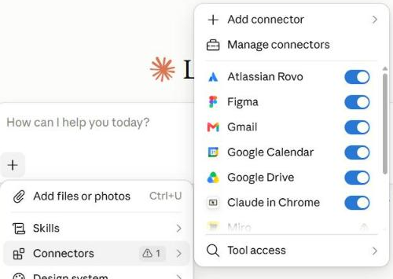
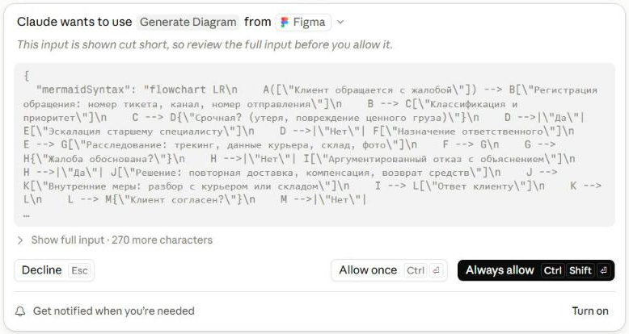
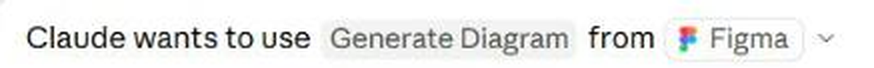
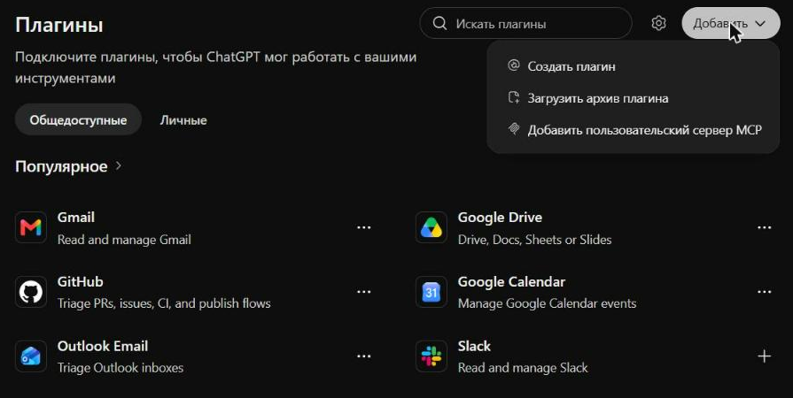
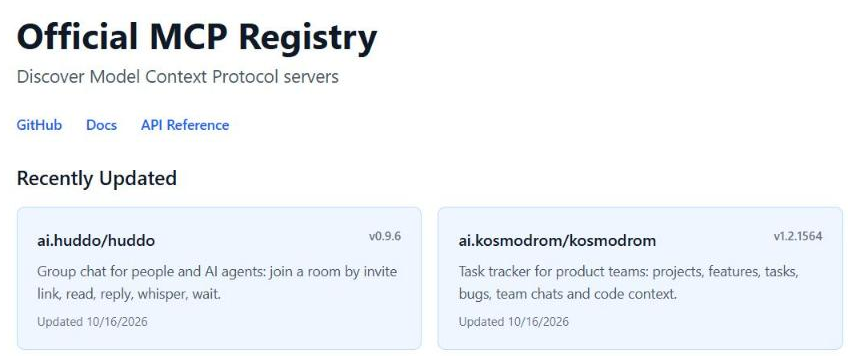

MCP и фреймворки агентов
Один стандартный «разъём», чтобы подключать инструменты к любому ИИ
Хосты, серверы, коннекторы Claude, реестр MCP, безопасность, свой мини-сервер, фреймворки агентов. Данные на октябрь 2026.
⏱ 2 мин. Приветствие. В L11 мы вручную описали функцию get_order_status для одной модели в AI Studio. Сегодня — как сделать инструмент один раз и подключать его к любому ИИ-приложению: Claude, ChatGPT, VS Code, LM Studio. Для этого есть стандарт MCP, Model Context Protocol.
План: зачем стандарт, как он устроен, где вы его уже видели (коннекторы Claude), разрешения, реестр серверов, локальные и удалённые серверы, свой мини-сервер, безопасность. После перерыва: фреймворки агентов, когда они нужны, агенты, которые говорят с агентами, упражнение и ДЗ.
Без стандарта каждое ИИ-приложение подключают к каждому сервису отдельно
⏱ 4 мин. В прошлом уроке функция get_order_status жила внутри одного чата AI Studio. А если её нужно дать Claude, ChatGPT, VS Code и своему боту? Без стандарта каждую пару «приложение — сервис» связывают отдельным кодом: у каждого свой формат описания инструментов, свой вход, свои ошибки.
Слева три приложения и три сервиса: девять отдельных связок. Справа то же через MCP: каждый подключается один раз к общему стандарту, и связок шесть. Чем больше приложений и сервисов, тем больше выигрыш.
MCP — как USB-C для ИИ-приложений: один разъём для любых инструментов
⏱ 5 мин. Официальная документация сравнивает MCP с портом USB-C: как USB-C стандартно подключает устройства, так MCP стандартно подключает ИИ-приложения к внешним системам. Слева приложения: Claude, ChatGPT, VS Code, LM Studio. Справа то, к чему подключаемся: Google Drive, GitHub, Figma, ваша база данных.
MCP придумала Anthropic в ноябре 2024 и сразу открыла как стандарт; его поддержали OpenAI, Google, Microsoft. Важно: MCP не заменяет вызов функций из L11. Внутри тот же механизм: модель предлагает вызов, программа выполняет. MCP стандартизирует, как программа узнаёт об инструментах и как их вызывает.
Три роли: приложение-хост, клиент внутри него и сервер с инструментами
⏱ 5 мин. Три роли. Хост — приложение, в котором вы общаетесь с ИИ: Claude, ChatGPT, VS Code. Сервер — отдельная программа, которая даёт инструменты и данные: сервер Google Drive умеет искать и читать файлы, сервер GitHub — задачи и код. Клиент — маленький «разъём» внутри хоста, по одному на каждый подключённый сервер; пользователь его не видит.
Сервер может давать три вида вещей. Инструменты — действия, как наша get_order_status. Ресурсы — данные для чтения: файлы, записи в базе. Промпты — готовые шаблоны, например «сделай сводку по задаче». Чаще всего вы встретите инструменты.
Коннекторы в Claude — это MCP‑серверы: включил и пользуешься

⏱ 5 мин. Если вы делали L09, вы уже пользовались MCP. В Claude кнопка плюс → Connectors (постоянная настройка — раздел Customize → Connectors). Каждый пункт списка — MCP-сервер: Atlassian, Figma, Gmail, Google Calendar, Google Drive. Переключатель включает или выключает его для этого чата. Add connector — подключить новый, в том числе свой по адресу. Manage connectors — настроить, какие инструменты сервера разрешены.
Совет из L11: чем меньше инструментов включено, тем реже модель путается. Для чата про отпуск не нужен GitHub.
Перед вызовом инструмента Claude спрашивает разрешение и показывает, что отправит


крупно⏱ 5 мин. Это правило «человек в цикле» из L11 в настоящем продукте. Мы попросили Claude нарисовать схему обработки жалобы, и он решил вызвать инструмент Generate Diagram из сервера Figma. Прежде чем вызвать, Claude показывает: какой инструмент, из какого сервера и что именно он отправит — здесь код схемы с текстом про жалобу.
Три кнопки. Decline — отказать. Allow once — разрешить один раз. Always allow — больше не спрашивать для этого инструмента. Правило: «всегда» только для безопасных инструментов, которые читают. Всё, что отправляет письма, удаляет, платит или публикует, подтверждаем каждый раз и читаем, что уходит.
В ChatGPT это называется «Плагины»: туда тоже можно добавить свой MCP‑сервер

⏱ 4 мин. Тот же стандарт в ChatGPT. Раздел «Плагины» (раньше — приложения и коннекторы): готовые Gmail, Google Drive, GitHub, Google Calendar, Outlook, Slack. Кнопка «Добавить» → «Добавить пользовательский сервер MCP»: свой сервер по адресу в интернете (локальный — только через защищённый туннель). Плагины в ChatGPT также заменяют GPTs, их отключают 11 декабря 2026 — об этом L13. Добавить свой сервер можно только на платных тарифах (режим разработчика); в документации OpenAI бесплатный план среди допущенных не указан.
Ещё хосты: VS Code, Cursor и Codex (агенты разработки, L16), LM Studio с версии 0.3.17 (Program → Install → Edit mcp.json, инструменты для локальной модели из L10), Microsoft Copilot Studio, приложение Gemini (пока только США, английский). Ollama сама не хост: она отдаёт модель приложению.
Официальный реестр: десятки тысяч серверов, и опубликовать может любой

⏱ 4 мин. Где искать серверы. Официальный реестр registry.modelcontextprotocol.io — пока в статусе превью. Мы посчитали через его API около 44 тысяч записей. Посмотрите на «недавно обновлённые»: от чатов для агентов до данных о криптовалютах. Реестр хранит только описания и не проверяет, безопасен ли сервер.
Правило: для популярного сервиса ищите сервер от самой компании. GitHub, Notion, Figma, Atlassian, Stripe и Slack запускают официальные серверы; например, GitHub держит свой по адресу api.githubcopilot.com/mcp, а старый пакет из репозитория примеров устарел. Сторонний сервер для почты или банка — красный флаг.
Та же функция из L11 становится MCP‑сервером за 10 строк
from mcp.server import MCPServer
mcp = MCPServer("courier") # имя сервера
@mcp.tool()
def get_order_status(order_id: str) -> dict:
"""Current status and ETA of one delivery order."""
return {"status": "on the way", "courier": "Anna", "eta_minutes": 12}
if __name__ == "__main__":
mcp.run() # запуск на этом компьютере⏱ 5 мин. Для тех, кто программирует. Официальный Python-пакет mcp (версия 2, Python 3.11+) содержит класс MCPServer — самый короткий способ сделать сервер; в старых статьях он называется FastMCP. Создаём сервер с именем courier, ставим над функцией строку @mcp.tool() — и функция get_order_status из L11 становится инструментом MCP. Docstring снова служит описанием для модели. mcp.run() запускает сервер на этом компьютере.
Главное отличие от L11: там функция жила внутри одного приложения. Здесь она — отдельный сервер, который можно подключить к любому хосту, поддерживающему MCP. Проверено с mcp 2.3.0, 16.10.2026; перед показом установите пакет (pip install mcp) и проверьте ещё раз.
Подключение — это несколько строк настроек: где лежит сервер и как его запустить
{
"mcpServers": {
"courier": {
"command": "C:\\courier\\.venv\\Scripts\\python.exe",
"args": ["C:\\courier\\courier_server.py"]
}
}
}⏱ 4 мин. Чтобы хост узнал о сервере, ему дают несколько строк настроек. Для локального сервера: имя, команда запуска и аргументы — хост сам запускает программу на вашем компьютере. Такой формат с разделом mcpServers используют Claude Desktop (файл claude_desktop_config.json), LM Studio и Cursor (файл mcp.json); у VS Code похожий, но раздел называется servers. Путь к файлу сервера указывайте полный. Укажите полный путь к python.exe, где установлен пакет mcp, например C:\courier\.venv\Scripts\python.exe: просто «python» хост может не найти.
Удалённые серверы живут в интернете: вы указываете адрес и входите своим аккаунтом, как при подключении Google Drive в Claude. Перед подключением свой сервер удобно проверить в MCP Inspector — это официальная утилита, которая показывает список инструментов сервера и позволяет вызвать их вручную.
Промпт для агента разработки: Codex в ChatGPT или Antigravity (бесплатно с лимитом), Claude Code (платно)
Сделай MCP-сервер на Python для курьерской службы. Только синтетические данные. 1. Официальный пакет mcp версии 2 (класс MCPServer), сервер «courier», данные из orders.json (5 заказов). 2. Инструменты: get_order_status(order_id) — только чтение; create_return(order_id, reason). 3. Хорошие docstring: что делает, когда звать. 4. Проверь сервер в MCP Inspector и покажи список инструментов. 5. Дай настройки mcpServers для Claude Desktop и LM Studio.
⏱ 4 мин. Как и в L10 и L11, руками писать не обязательно. Промпт описывает сервер с двумя инструментами, хорошими описаниями и проверкой в MCP Inspector. Агент разработки создаст проект, напишет код, запустит Inspector и выдаст настройки для Claude Desktop и LM Studio.
Связь уроков: модель из L10 в LM Studio + сервер из этого промпта = полностью локальный агент поддержки, который не отправляет данные наружу. Это вариант ДЗ по желанию. Что такое агент разработки и как его выбрать — L16.
Подключённый сервер получает доступ к вашим данным. Подключайте только проверенные
- Сервер от известного автора или своей компании
- Минимум прав, ненужные — выключить
- Читать запрос разрешения
- «Всегда разрешать» — только для чтения
- Рабочие данные — только через одобренные компанией коннекторы
⏱ 5 мин. MCP-сервер — это программа, которой вы даёте доступ к почте, файлам, задачам. Четыре типичных риска. Отравленное описание: в описании инструмента, которое модель читает, спрятана команда; пользователь её не видит, а модель может послушаться. Чужой текст в данных: тот же prompt injection из L11, но через письма и страницы, которые читает сервер. Лишние права: сервер просит больше, чем нужно. Подмена: сервер был безопасным, а после обновления стал делать другое.
Правила простые: подключать серверы от известных авторов или своей компании, давать минимум прав, выключать ненужные, читать запрос разрешения и разрешать «всегда» только чтение. Для рабочих данных — только коннекторы, одобренные вашей компанией.
Вызов функций, MCP и фреймворк: слои вложены друг в друга, их не надо путать
⏱ 4 мин. Три слова часто путают. Вызов функций (L11) отвечает на вопрос, как модель просит действие. MCP отвечает, как приложение находит готовые инструменты и вызывает их стандартным способом. Фреймворк агентов отвечает, кто крутит цикл: сколько шагов, что запомнить, где спросить человека, как записать журнал.
Слои складываются: фреймворк может использовать MCP-серверы, а внутри всё равно работает вызов функций. Но не начинайте с «MCP плюс фреймворк» для задачи, где хватит одного чата с двумя функциями.
За два года MCP стал общим стандартом, а не проектом одной компании
⏱ 4 мин. Почему MCP стоит учить. По официальному блогу MCP, SDK скачивают почти полмиллиарда раз в месяц. Уже в декабре 2025 было больше 10 тысяч активных публичных серверов. В том же декабре Anthropic передала MCP в Agentic AI Foundation при Linux Foundation, её соучредители — Anthropic, Block и OpenAI. То есть стандарт больше не принадлежит одной компании.
Минус быстрого роста: стандарт меняется. Спецификация от 28 июля 2026 стала проще для облачных серверов; часть старых функций устарела. Python-библиотека перешла на версию 2, и код из статей 2025 года может не запускаться.
5 минут: отключитесь от всех серверов
Дальше: фреймворки агентов, когда они нужны, агенты, которые говорят с агентами, упражнение и ДЗ.
⏱ 5 мин. Нажмите «Старт».
Фреймворки агентов: готовый цикл, память, подтверждения и журнал
⏱ 5 мин. Фреймворк агентов — библиотека, которая берёт на себя цикл из L11 и всё вокруг него: память между шагами, передачу задачи другому агенту, паузы на подтверждение человеком, журнал (трассировку). OpenAI Agents SDK и Claude Agent SDK — от поставщиков моделей; Claude Agent SDK использует тот же движок, что Claude Code, код Python-версии открыт под MIT, но использование SDK регулируется коммерческими условиями Anthropic.
Google ADK — агенты на Gemini и других моделях с удобным деплоем в Google Cloud. LangGraph описывает агента как схему шагов с памятью и паузами. Microsoft Agent Framework — прямой преемник AutoGen и Semantic Kernel; AutoGen теперь только поддерживается, а новым проектам Microsoft советует Agent Framework. CrewAI — «команда» агентов с ролями. Ещё есть LlamaIndex и Pydantic AI. Выбирать по экосистеме: на какой модели и в каком облаке вы работаете.
Добавляйте сложность только тогда, когда простого перестало хватать
⏱ 4 мин. Лестница сложности. Начинаем сверху, с самого простого, и спускаемся ниже, только если упёрлись. Один чат и пара функций — хватит вызова функций. Нужно, чтобы один инструмент работал в Claude, ChatGPT и вашем боте — делаем MCP-сервер. Агент делает много шагов, должен помнить контекст, спрашивать подтверждение и вести журнал — берём фреймворк. Несколько агентов от разных компаний должны договориться между собой — протокол A2A.
A2A: стандарт, по которому агенты разных компаний договариваются друг с другом
на 12–14 мая»
⏱ 4 мин. Последний стандарт урока, для общего понимания. MCP соединяет агента с инструментами и данными. A2A, Agent2Agent, соединяет агентов между собой: ваш агент-ассистент просит агента отеля забронировать номер, и они договариваются, не зная, как устроены друг у друга внутри.
A2A начинал Google, версия 1.0 вышла в марте 2026, а 17 августа 2026 протокол перешёл в тот же фонд при Linux Foundation, что и MCP. Для новичка достаточно знать, что такое слово есть и что это про общение агентов разных компаний.
Упражнение: какие MCP‑серверы подключить и что разрешить?
⏱ 4 мин. Упражнение в чат, 3 минуты. Каждый выбирает одну задачу и пишет: какие серверы нужны, какие права (только чтение или запись) и где должен подтверждать человек.
Разбор. Продажи: CRM и почта, только чтение, подтверждение не нужно — это сводка. Бухгалтерия: Drive и таблицы, чтение одной папки; если агент правит таблицу — подтверждение. Поддержка: тикеты и почта; ответ клиенту и закрытие тикета — действия с последствиями, их подтверждает человек. HR: файлы с резюме — персональные данные: только одобренный компанией коннектор и только нужная папка.
ДЗ: подобрать MCP‑серверы для своей задачи и описать правила доступа
- Выберите рабочую задачу, где ИИ нужны ваши данные или сервисы
- Найдите 2–3 подходящих MCP-сервера (коннекторы Claude/ChatGPT или реестр)
- Подключите один на тестовых данных и сделайте скриншот запроса разрешения
- Для каждого сервера: автор, какие инструменты, какие права нужны
- Правила: что разрешить «всегда», что — каждый раз, что не подключать
genai-homeworks/L12/ ├─ README.md # задача и вывод ├─ servers.md # 2–3 сервера: что дают ├─ demo.png # запрос разрешения └─ rules.md # права и подтверждения
⏱ 5 мин. ДЗ без обязательного кода. Выбрать задачу, найти 2–3 MCP-сервера, подключить один в Claude или ChatGPT на тестовых данных и сделать скриншот запроса разрешения. Для каждого сервера записать автора, инструменты и нужные права. В конце — правила: что разрешать всегда, что каждый раз, что не подключать вовсе. На бесплатном плане свой сервер в ChatGPT не добавить: берите готовый коннектор Claude (Google Drive) или LM Studio с сервером со слайда 11. Подробности в L12_05_Homework.
MCP подключает инструменты, разрешения берегут данные, фреймворк — только когда шагов много
⏱ 3 мин. Четыре мысли. MCP — стандартный разъём: один сервер работает во многих приложениях. Роли: хост, клиент, сервер; сервер даёт инструменты, ресурсы и промпты. Безопасность: читать запрос разрешения, давать минимум прав, «всегда» только для чтения. Фреймворк агентов нужен, когда шагов много, нужна память или несколько агентов.
Следующий урок: свои ассистенты без кода — проекты в Claude, плагины в ChatGPT (они заменяют GPTs), агенты Copilot — и Agents SDK для тех, кто пишет код.